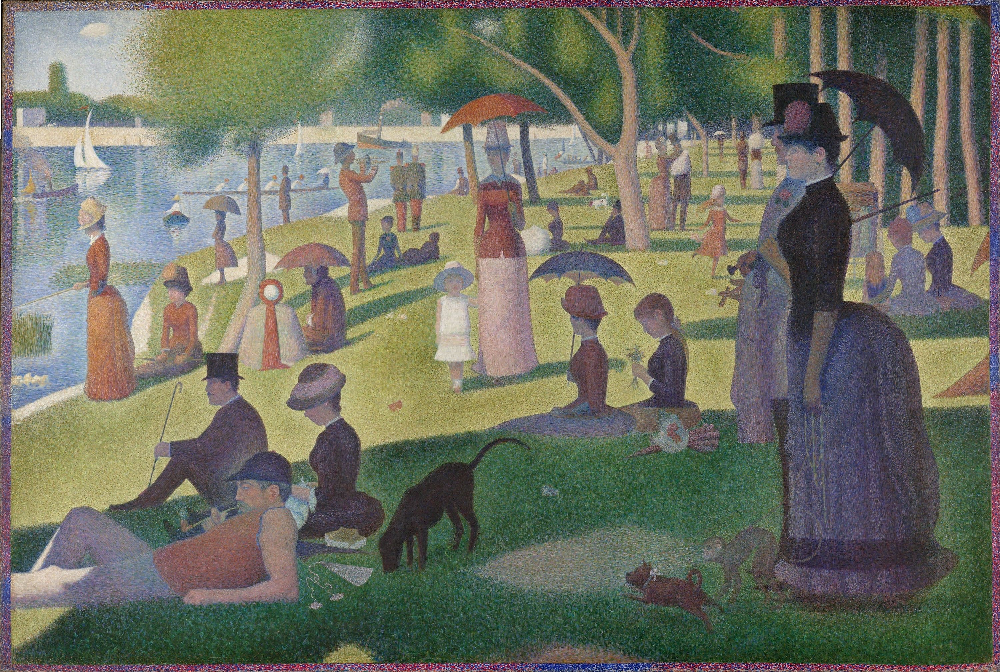
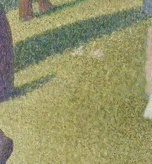
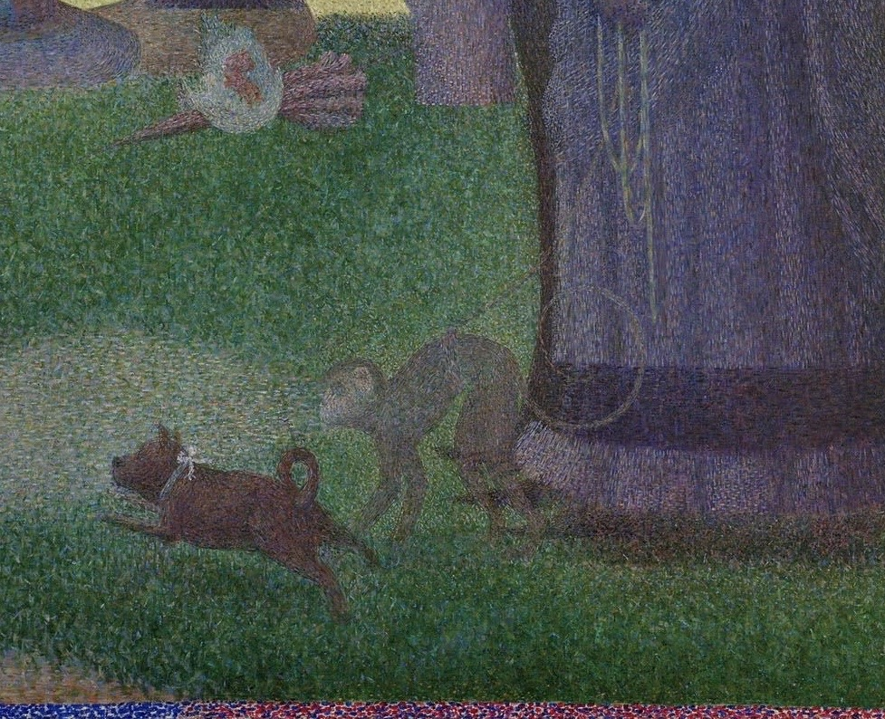

Il manifesto del Puntinismo di Georges Seurat
Completata nel 1886 dopo due anni di lavoro meticoloso, quest'opera monumentale segna la nascita del Neoimpressionismo. Seurat non mescola i colori sulla tavolozza, ma li accosta direttamente sulla tela.

Oltre 200 schizzi preparatori sono stati necessari per bilanciare le 48 figure umane in un parco calmo e quasi immobile, sulle rive della Senna.
Parigino purosangue, Seurat morì a soli 31 anni, ma rivoluzionò la pittura. Era un "pittore scienziato": studiava le leggi dell'ottica e della percezione visiva per dare alle sue tele una luminosità vibrante che il pennello tradizionale non poteva ottenere.

Guarda questo dettaglio. Seurat ha inventato il concetto di Pixel oltre un secolo prima degli schermi digitali! Proprio come le foto sul tuo telefono sono fatte di milioni di puntini colorati che il cervello unisce in un'immagine fluida, Seurat usava il "Divisionismo" per far sì che fosse l'occhio dello spettatore a mescolare i colori.

Un dettaglio che spesso sfugge: in primo piano a destra, una donna elegante tiene al guinzaglio... una scimmietta! All'epoca, possedere animali esotici era un simbolo di status sociale altissimo, ma molti critici vedono in questo animale un tocco di ironia di Seurat verso le manie della borghesia parigina dell'epoca.